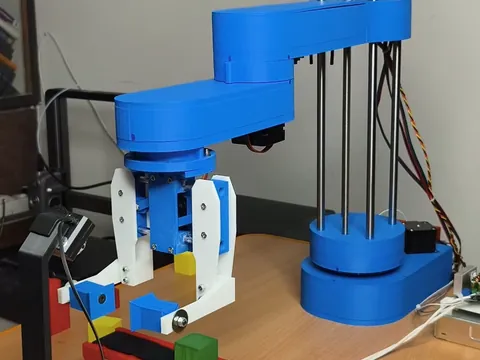
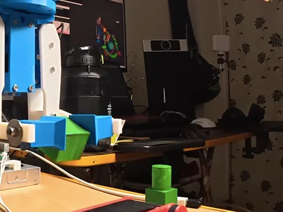

What it does
- A 4-DOF SCARA arm watches a conveyor of randomly coloured boxes.
- A fixed depth camera with OpenCV finds boxes by colour and depth.
- The arm picks only the selected colour and places it, ignoring everything else.
- A Gazebo digital twin runs alongside the physical arm.
- A manual control GUI and conveyor control run through ROS 2.
How it is built
- Mechanical
- An open SCARA design, adapted and 3D-printed; stepper motors and lead screws.
- Firmware
- Arduino with a CNC shield driving the steppers.
- ROS 2
- URDF from the Fusion 360 assembly, MoveIt 2 for planning, a C++ ros2_control hardware interface.
- Perception
- Fixed depth camera; OpenCV colour and depth detection.
- Simulation
- A Gazebo world that mirrors the physical cell.
- Simulation only
- Hand-gesture control (OpenCV + MediaPipe, Part 7) and voice control (speech-to-text, an LLM for task understanding, text-to-speech, MoveIt; Part 9).
The hard part
Moving from hardcoded coordinates to picking from live camera data. I first tried a camera mounted on the robot, then chose a fixed camera as the simpler and more reliable design. On hardware, the work was syncing the twin with the physical arm and validating each subsystem on its own (control GUI, conveyor, camera detection, hardware interface) before the full run.


Status and limits
- The mechanism is adapted from an open SCARA model, credited in Part 2. My work is the ROS 2 integration, simulation, planning, perception, conveyor cell, electronics and twin.
- The steppers run without encoders, so closed-loop positioning is not shown.
- Gesture and voice control were demonstrated in simulation only.
- I haven't published a measured success rate.
Related
Manipulation in simulation, the arm work that came before this · the 3-DOF arm digital twin · the industrial robotic arm program built on this cell (in preparation).